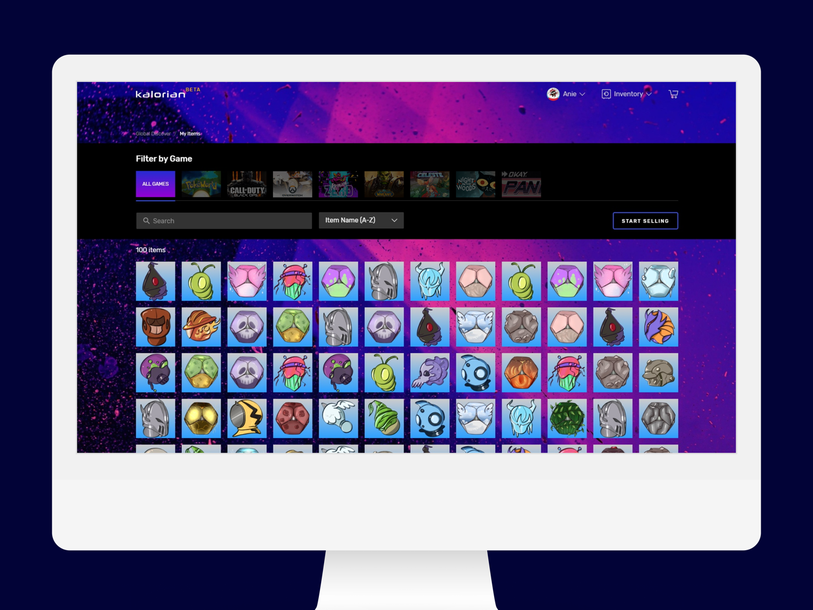

Senior / Staff Product Designer based in Los Angeles, CA
15+ years across startups and global platforms, building products 0→1 and sharpening those already at scale. The hard part is rarely just the interface. It’s the interface plus the rules it has to follow, the systems underneath, and everyone who owns a piece of it. I work on all of it so the person using it doesn’t have to feel any of it.

Took prescription scheduling off the phone and into a self-serve flow patients understood, freeing up 65% of agent time.

Rebuilt a broken cash-gift flow that cut purchase-confusion support tickets by ~75%.

Redesigning the pivotal screen in the booking flow across a franchise system where every property owns its own content.

Built a bulk-selling system for marketplaces with thousands of items, as the company's only designer.

An end-to-end marketplace concept for booking a personal chef, scoped for both hosts and chefs.

A self-directed case study in progressive personalization, grounded in App Store research and real usage friction.
Her commitment to putting the team above herself is nothing short of inspiring. Anie’s quiet confidence is a sign of her maturity and experience, as much as her exemplary observation skills and focus… She focuses on the big picture as much as the small details, finding moments of delight while thoughtfully balancing speed and cost. Put simply, Anie would be an asset to any team worthy of her talents.
Anie works hard and humbly. She thoughtfully and eagerly jumps into new problem spaces or opportunities for collaboration, without needing to be the loudest voice in the room or overstepping for the sake of it.
A top-notch UX designer and team leader. She stepped into a dynamic project, featuring an opinionated engineering team and a client with high standards, and immediately contributed with quality designs, executed to aggressive deadlines.
I’ve loved working with Anie the past 2+ years because she’s creative, well-rounded, user-focused, responsive (both in design and in relating to others). She thinks about technical feasibility, capacity, accessibility and has all the boxes checked when presenting a new design.